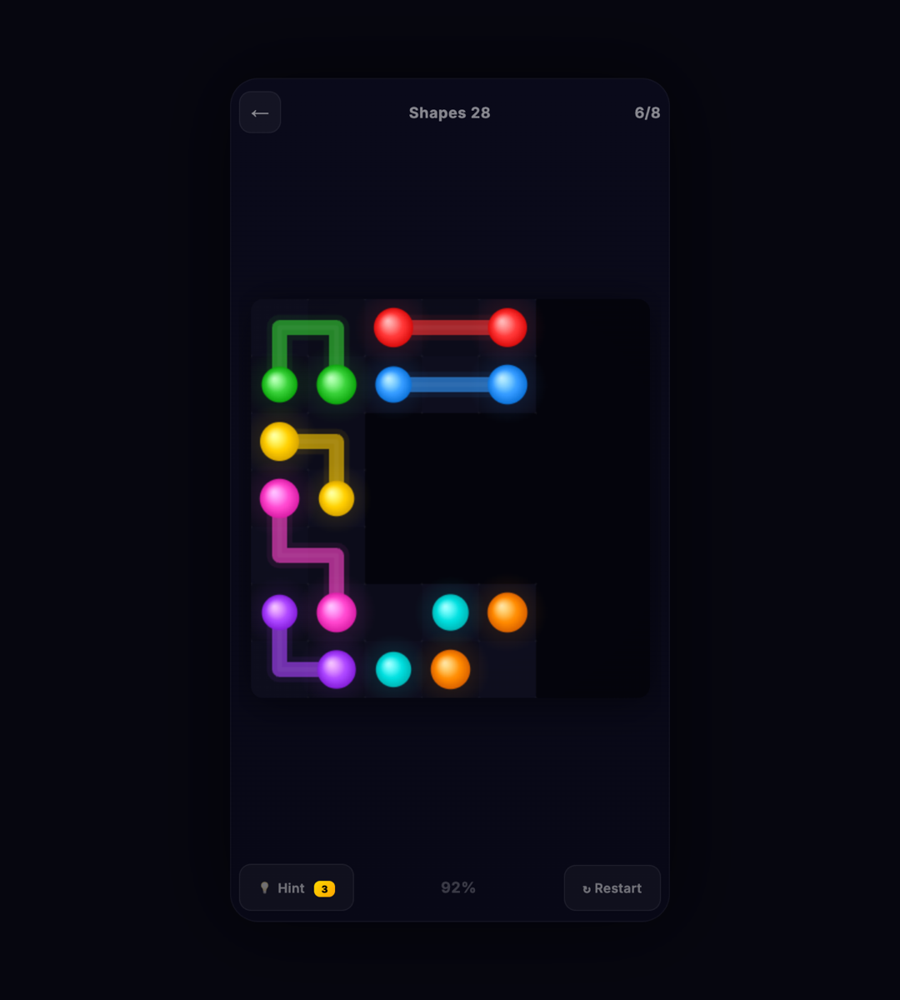
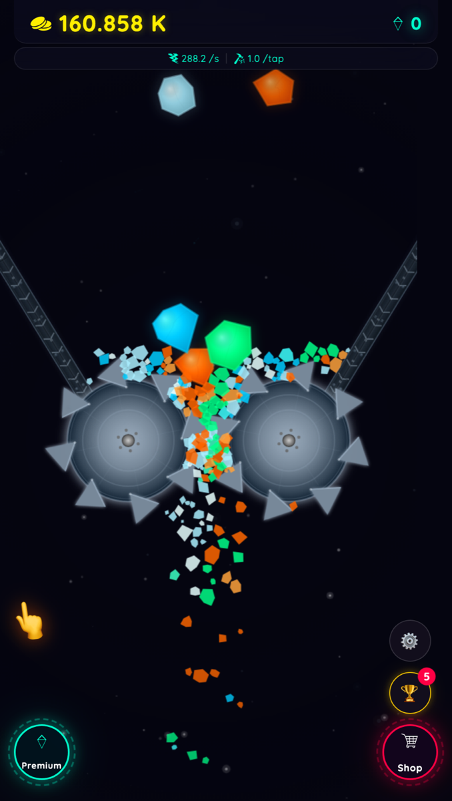
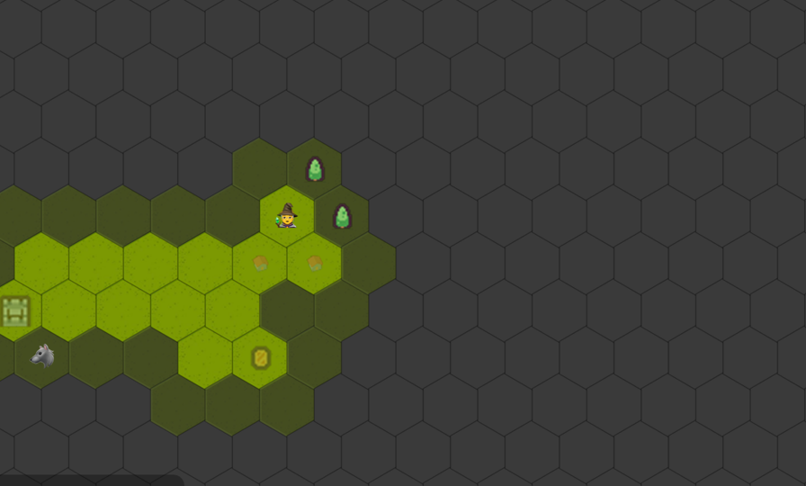

Браузерная MMORPG
Онлайн-мир: игроки видят друг друга, бьют мобов, собирают лут. Весь мир рисуется в собственной админке — кистью по карте, с конструкторами мобов, НПС и предметов.
Node.js · Socket.IO · Canvas · живой редактор карт
Нужен свой сервер
Код

Dungeon Crawler
Лабиринт от первого лица для телефона: коридор рисуется рейкастингом по тайловой карте. Бой, характеристики, заклинания, торговцы с квестами.
Godot 4 · GDScript · портретный режим
Нужна сборка под web
Код